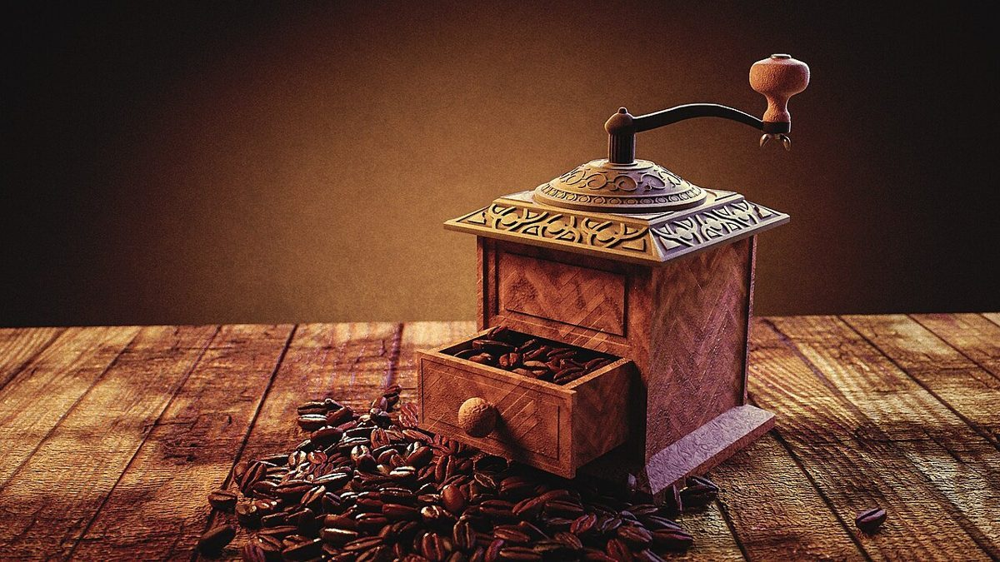

店のこと
店のこと
お店について確認できているのは、所在地とInstagramのアカウントだけです。
このページの「想像してみる」部分は、制作側が想像して書いたものです。お店の実際の様子・考え・メニューとは関係がありません。
確認できていること
- 店名は「monde」、業種はカフェ
- 所在地は秋田県由利本荘市花畑町1丁目38(〒015-0075)
- 電話番号はなし。連絡はInstagramから
- 営業時間・定休日・メニュー・価格・ご予約・駐車場は準備中

想像してみる
「世界」という語から
由来は分かりません。制作側は、地図帳をぱらぱらとめくるように、まだ知らない場所へ思いをめぐらせる、そんな店名なのかもしれないと想像しました。お店の実際の姿ではありません。

地図帳をめくるように